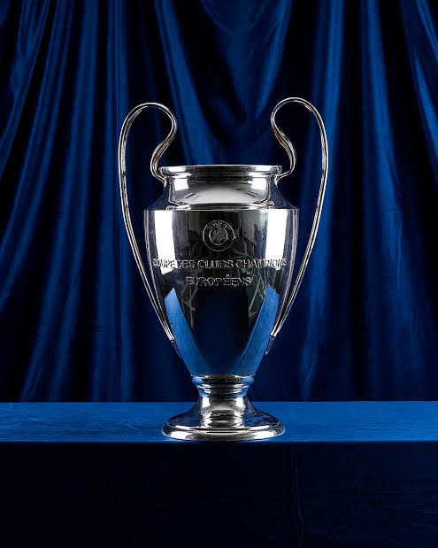

The UEFA Champions League knockout phase presents unique strategic challenges. Two-legged ties require balance between attacking ambition and defensive caution.
Clubs playing the first leg at home often prioritize defensive solidity to avoid conceding crucial away goals. The second leg frequently becomes more open, particularly if one team trails on aggregate.
European knockout matches are often decided in midfield. Press resistance, positional discipline, and tempo control define the outcome of elite fixtures.
Compact defensive blocks and effective transitions remain key to countering possession-dominant teams.
Injury availability and squad rotation decisions will significantly influence progression.